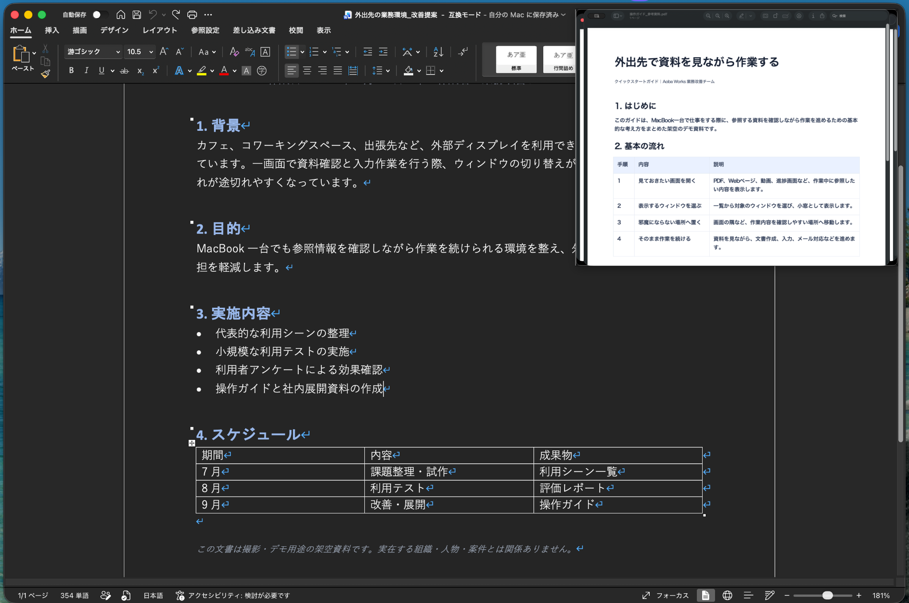

画面を行ったり来たり
確認するたびにウィンドウを切り替え、集中が少しずつ途切れる
見ておきたい画面を、作業中も手元に
カフェでも、オフィスでも、出張先でも
無料で使い続けられます1回10分まで何度でも期間制限なし登録不要

一画面の仕事は、意外と忙しい
資料を開く作業画面に戻る分からなくなって、また資料を開く外部ディスプレイがない場所では、この小さな往復が何度も発生します
確認するたびにウィンドウを切り替え、集中が少しずつ途切れる
資料を確認しながら、そのまま書く画面を往復せずに仕事を続けられます
仕事の場所が変わっても、使い方は変えない
カフェ、図書館、コワーキングスペース、フリーアドレスのオフィス、出張先限られた画面でも、参照と作業を同時に進められます
カフェで
PDFやWebページを確認しながら、メールや文書を作成
オフィスで
手順書やタスクを手元に置き、入力や更新をそのまま続ける
出張先で
タイマー、進捗、チャットなど、気になる画面を隅に表示
実際の画面
見ておきたいウィンドウを小窓にして、作業画面の上へ小窓は好きな位置や大きさに調整できます
まずは無料で、いつもの仕事に
1回10分までなら、期間制限なく何度でも利用できますいつもの仕事で使い続けて、長時間使いたくなったら買い切りの無制限版へ
無料版
期間制限なく、使い続けられます
無制限版
長時間使いたくなったら
ブラウザ、文書、PDF、動画、ダッシュボードなど、対応するMacのウィンドウを小窓として表示できます
いいえ選択したウィンドウはMac上でローカル表示され、開発者サーバーや外部AIサービスへ送信されません
無料版は、1回10分までなら期間制限なく何度でも利用できます長時間使いたくなった場合は、1,500円の買い切りで時間制限を解除できます
macOS 14以降に対応し、Apple silicon MacとIntel Macの両方で利用できます
次に外で仕事をするときに
1回10分まで、何度でも無料長時間必要になったら買い切りで時間制限を解除できます